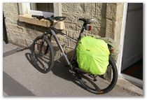

I'd had my train ticket for weeks. Booked that far in advance a return ticket from Lancaster to Oxford including seat reservations for both me and my bike is £32. I attached my rarely-used second pannier to my bike and noticed the colour difference in the rain covers.
The journey to Oxford passed and I unhooked my bike from the rack and dropped onto the platform. After finding the way past the automatic gates and struggling to dig my ticket out of my bags (note to self: not all stations are fully open these days) I hit the streets.
Oxford is quite cycle friendly. From the train station there are several cycle path signs. I wanted to head south and pick up the river, so I followed a sign for 'South Oxford'. Somehow this looped round and dumped me in central Oxford. The town centre has restrictions on cars and there's just mainly buses and taxis. These people generally know where they are going so it seems that direction signs are now superfluous and have been removed. I did a run down the main street, crossed Magdelene Bridge, round the roundabout, back across the bridge, behind one of the colleges on a cobbled street, and back onto the main road again. A nice little tour. But I wanted to go south, so I just set my bike into the mid-afternoon sun and kept going.
Somehow I found the riverside track. At one point I had to ask a fellow cyclist directions and he turned out to be a policeman on a mountain bike. I was on the right track for sure.
In the afternoon heat the shady trees gave some welcome relief. The river slowly drifted by with swans, ducks, butterflies a-plenty. Cornfields glowed as they ripened in the sunshine.
At Abingdon some boys were jumping off the bridge into the river, daring each other to do it. People soaked up the sunshine like the corn in the fields. A red kite swooped down, landed in a field, and took off again. The first red kite I'd seen in England, having seen them in Wales about 12 years ago and in Scotland four years ago.
From Abingdon the Thames weaves through meadows and fields again. Several butterflies flew up to kiss me as I passed. I left the river at the weirs and pools of Culham and into the village of Sutton Courtenay. Frequent checking of my map got me onto a concrete back lane behind Didcot power station, its cooling towers having been for the most part obscured during the journey. And then the jackdaws lifted up together chattering madly as six red kites came in for their turn on the rubbish.
After that excitement it was down into Didcot to find Caroline's house. We sat in the garden and had dinner next to the pond, looking for frogs. Then it was time to put new tyres on her bike and check it all out. She had just got a new frame as well. Tomorrow was going to be its first trip out!
{kind=link}
{kind=link}
{kind=link}
{kind=link}